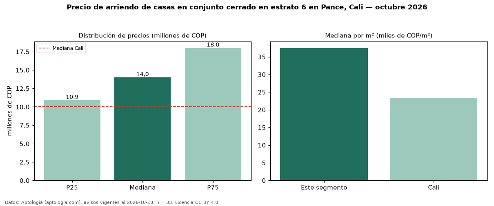

Precio de arriendo de casas en conjunto cerrado en estrato 6 en Pance, Cali — octubre 2026
En Pance, Cali, la mediana de canon mensual de casas en conjunto cerrado en estrato 6 es COP 14 millones, según 33 avisos vigentes. Prácticamente coincide con la mediana de las casas en estrato 6 en arriendo de Pance (COP 14 millones, n = 113); este segmento reúne el 29 % de esos avisos. Por metro cuadrado, la mediana es COP 37.500/m² al mes (n = 33), 15 % por encima de las casas en estrato 6 en arriendo de Pance (COP 32.698/m²). El área mediana anunciada es 396 m². El segmento con más oferta es el de 3 o más habitaciones (33 avisos, mediana COP 14 millones). La mediana de todas las casas en arriendo de Cali es COP 10 millones (+40 % de diferencia). La mitad central de los avisos va de COP 10,90 millones a COP 18 millones (razón 1,7), una dispersión moderada. Datos: Aptología (aptologia.com), CC BY 4.0 — https://www.aptologia.com/casas-en-arriendo/cali/pance. Archivos: PDF, CSV con las cifras y gráfica PNG.

| Avisos únicos | 33 |
|---|---|
| Percentil 25 | COP 10.900.000 |
| Mediana | COP 14.000.000 |
| Percentil 75 | COP 18.000.000 |
| Mediana por m² | COP 37.500 |
Fuente: avisos vigentes de portales inmobiliarios recopilados por Aptología, deduplicados (mínimo 30 avisos únicos por celda). Precios pedidos, no cerrados. Fecha: 2026-10-18.